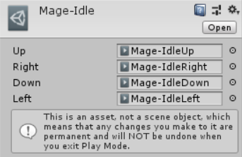
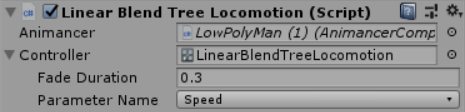

|
Animancer is a Unity plugin which allows you to play animations on demand and control all their details without any additional setup steps. It solves the major problems with Animator Controllers and can either replace them entirely or work alongside them on the same character. This makes animations much easier to work with in all stages of development from basic prototyping through to maintaining and debugging complex systems. You can try out all the Features for FREE with Animancer Lite. Animancer v4.0 is currently under development and is available for Beta Testing. | ||||
| ||||
Quick PlayPlay animations on-demand without any unnecessary setup steps. Just get an   | ||||
Easy WaitingRegister a callback to be triggered when an animation finishes so you don't need to constantly check whether it is done. yield return an AnimancerState inside a coroutine or simply check the AnimancerState.NormalizedTime.
| ||||
|
Smooth TransitionsUse | ||||
Simple ConfigurationManage the details of your animations in the Inspector so they can be edited as part of the scene or use scripts to control everything dynamically at runtime. You can even extend the available data types or implement your own to define specific data for each animation as demonstrated in the Sequence Coroutine example. Note that the ability to set a customFade Duration, Speed, or Start Time are Pro-Only features. See Total Control for details.
| ||||
Flexible StructureOrganise your animations using arrays, This allows you to define common structures like  
 | ||||
Live InspectorView the current details of your animations in the Inspector with manual controls for debugging and testing.
| ||||
Finite State MachinesAnimancer doesn't force you to use a restrictive state machine system like Animator Controllers do. TheAnimancer.FSM is very flexible and entirely separate from the animation system. They work well together, but you can very easily modify it or use any other system you prefer. The State Machines examples demonstrate how to use it. | ||||
|
High PerformanceIn comparison to an Animator Controller, Animancer is notably faster at Instantiation and has a very slightly faster Average Frame Rate, though the differences are usually small enough not to matter. | ||||
|
Great CompatabilityMost systems developed for regular Animator Controllers should work with Animancer and it supports most of the other features of Unity's animation system: | ||||
Animancer Pro FeaturesYou can try out the following features in the Unity Editor with Animancer Lite, but you will need to purchase Animancer Pro to use them in a runtime build or view the Source Code. See the Feature Comparison for the full list of differences. Also note that most people only leave a review of the Pro version but not Lite so if you are looking for other opinions you will find many more on that page. | ||||
Total Control [Pro-Only]You have full access to the details of all animations, including their speed, time, and weight as demonstrated in the Fine Control examples. | ||||
Animation Layers [Pro-Only]Manage multiple animation sets at the same time (generally on different body parts). Layers can either override or add to each other and you can fade them in and out just like individual animations. The Layers example demonstrates how to use them. | ||||
Animator Controllers [Pro-Only]Animancer does not require the use of Animator Controllers, but it does support a hybrid approach which uses them alongside directAnimationClip references for different tasks. You can even mix multiple Animator Controllers on a single character. You get total freedom to structure each project to suit your needs.
| ||||
|
Animation Mixers [Pro-Only]Blend Trees automatically handle a lot of things for you such as timing walk animations so that they all put the character's foot down at the same time for better blending. Animation Mixers on the other hand can be created dynamically at runtime and give you full access to all sub-states so that you can control the finer details yourself. The Linear Blending example goes into more detail about their differences. | ||||
Custom States [Pro-Only]Create your own state types to implement custom blending algorithms or other behaviour. | ||||
Source Code [Pro-Only]The full source code of Animancer is included as plain C# files with detailed comments so you can see all its internal workings, track down bugs, make any modifications you see fit, and avoid becoming dependant on the developer to fix issues (but feel free to post in the Unity forums or email AnimancerUnityPlugin@gmail.com if you need support). | ||||
| Check out the Documentation and Examples to get started. |